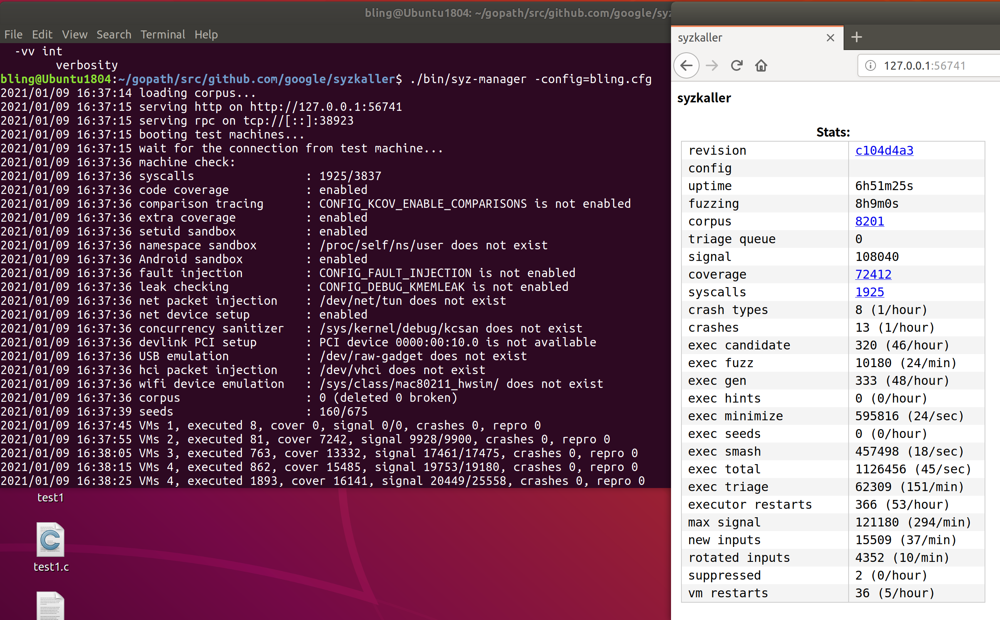
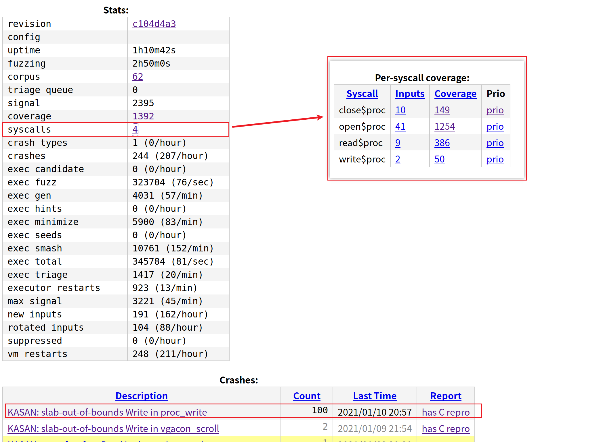
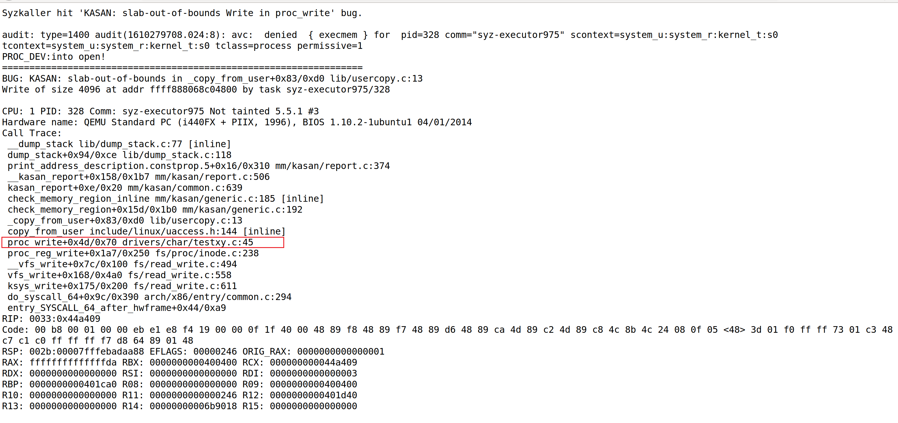
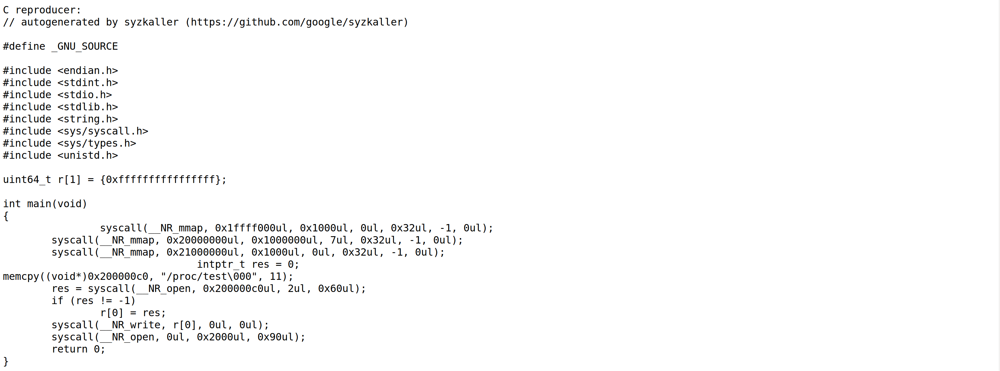

syzkaller fuzz 工具的使用方法及实践实例
Syzkaller 是google安全研究人员开发并维护的内核fuzz工具（2015年在github开源），由go语言编写，含少部分c/c++代码。支持多个操作系统内核，如linux、windows、darwin、openbsd等等，其对linux的支持最为全面。
本篇文章将搭建syzkaller环境的过程记录下来，供之后参考。
更新了一个视频：内核fuzz工具Syzkaller使用方法介绍
x86-64 linux虚拟机
fuzz对象是linux kernel，架构是x86-64，使用qemu模拟运行。
编译syzkaller
以syzkaller github上最新版为准，项目一直在更新，今天（2022年2月）编译的时候，跟我上次（2020年12月）编译有挺多地方都不一样了。
下载go语言编译器
1
2
3
4
5wget https://dl.google.com/go/go1.17.6.linux-amd64.tar.gz
tar -xf go1.17.6.linux-amd64.tar.gz
# 后面这两条命令建议设置到～/.bashrc文件中，通过source ~/.bashrc命令更新配置
export GOROOT=`pwd`/goroot
export PATH=$GOROOT/bin:$PATH下载并编译syzkaller
1
2
3
4
5git clone https://github.com/google/syzkaller
cd syzkaller
make
# 如果fuzz目标是arm 64位，则需指定交叉编译器，如下
# make CC=aarch64-linux-gnu-g++ TARGETARCH=arm64编译过程中遇到一个问题，是因为虚拟机内存给少了，给到12G内存后不再报错。
编译完成后，在syzkaller目录下会出现一个bin目录，里面就是我们后面需要用到的二进制。如下是我编译的结果：
1 | ~/syzkaller$ tree ./bin |
编译linux内核
以linux 5.14内核为例，先将源码下载到本地
1
git clone --branch v5.14 git://git.kernel.org/pub/scm/linux/kernel/git/torvalds/linux.git
生成默认配置文件
1
2
3cd linux
make defconfig
make kvm_guest.config更改.config文件
为了fuzz效率，以下内核配置必须打开。更多可选配置见Linux kernel configs
1
2
3
4
5
6
7
8
9
10
11
12
13
14
15
16
17
18
19# Coverage collection.
CONFIG_KCOV=y # must
# Debug info for symbolization.
CONFIG_DEBUG_INFO=y
# Memory bug detector
CONFIG_KASAN=y
CONFIG_KASAN_INLINE=y
# Code coverage works better when KASLR Is disabled
# CONFIG_RANDOMIZE_BASE is not set
# 可选
CONFIG_KCOV_INSTRUMENT_ALL=y
CONFIG_KCOV_ENABLE_COMPARISONS=y
CONFIG_DEBUG_FS=y
CONFIG_DEBUG_KMEMLEAK=y重新生成配置文件并编译
1
2make olddefconfig
make -j4漫长的等待后，就能在目录下看到
vmlinux(kernel binary) 和bzImage(packed kernel image)1
2
3
4~$ ls linux/vmlinux
linux/vmlinux
~$ ls linux/arch/x86/boot/bzImage
linux/arch/x86/boot/bzImage
配置qemu虚拟机
- 安装qemu
使用sudo apt install qemu或下载最新qemu源码编译。前者的版本较低，有些特性不支持。建议使用后者。
- 生成image
使用debootstrap构建linux启动镜像：
1 | sudo apt-get install debootstrap |
完成之后目录内容如下：
1 | ll |
- 启动虚拟机
启动虚拟机试试
1 | qemu-system-x86_64 -m 2G -smp 2 -kernel /home/bling/linux/arch/x86/boot/bzImage -append "console=ttyS0 root=/dev/sda earlyprintk=serial net.ifnames=0" -drive file=/home/bling/qemu-img/stretch.img,format=raw -net user,hostfwd=tcp:127.0.0.1:10021-:22 -net nic,model=e1000 -enable-kvm -nographic -pidfile vm.pid 2>&1 | tee vm.log |
对以上各参数我的理解如下：
1 | -kernel xxx/bzImage：用bzImage作为内核镜像，qemu的这个功能用来测试不同内核非常方便。 |
参考了两篇文章：（1）hostfwd的问题 （2）make 2>&1 | tee log.txt 命令解析
qemu启动起来之后，运行ssh测试一下是否连通，便于后期syzkaller运行出错时定位问题。
1 | ssh -i $IMAGE/stretch.id_rsa -p 10021 -o "StrictHostKeyChecking no" root@localhost |
曾经有一次连接时在这里出了问题，宿主机上ssh无法连接到虚拟机。原因如下：
由于上一步中create-image.sh中如下eth0跟实际qemu虚拟机中运行的网卡名称不一样，导致网卡没有分配IP地址。最后解决方法如下：qemu启动虚拟机，root用户身份登录后，设置网卡IP地址。
参考文章：（1）网卡没分配IP地址的解决方法（2）rsa公私钥知识点（3）一个自己生成公私钥配置的方法
1 | 关闭qemu虚拟机 |
启动syzkaller - qemu
为了使syzkaller运行起来，在syzkaller目录下，新建一个workdir目录，并新建一个config文件用于配置运行所需参数（命名为xxx.cfg）
1 | mkdir workdir |
cfg文件的格式如下，根据实际情况各参数可做更改：
1 | { |
执行成功后，如下图所示：

启动syzkaller - isolated
对于两台通过网络连接的独立机器，使用syzkaller进行fuzz时，需要设置ssh连接并更改config配置文件。
ps. 由于没有两台物理机，这里复用上一步的qemu，不同点在于将虚拟机和物理机看作两台独立运行的机器
可参考如下步骤，先配置好待测试设备，然后再运行syzkaller。
配置好待测试设备
在使用syzkaller进行fuzz之前，需要确保目标设备上运行着上一步编译的内核，并且设置好了ssh连接。
可参考官方文档：setup_linux-host_isolated
提炼一下，需保证如下几点：
待测试设备上运行着ssh服务
打开ssh的AllowTcpForwarding选项
1
2grep Forwarding /etc/ssh/sshd_config
AllowTcpForwarding yes配置ssh无密码连接
1
2
3# 在本地生成公私钥对文件
ssh-keygen -t rsa
# 然后，将公钥文件拷贝到目标测试机器的/root/.ssh/目录下，并重命名为authorized_keys运行syzkaller
在本地和目标设备上各创建一个工作目录
1
2
3
4
5
6# 本地：
cd syzkaller
mkdir workdir
# 远端：
cd home
mkdir fuzzdir在syzkaller目录下新建一个fuzz.cfg文件
1
2
3
4
5
6
7
8
9
10
11
12
13
14
15
16
17{
"target": "linux/amd64",
"http": "127.0.0.1:56741",
"rpc": "127.0.0.1:0",
"sshkey" : "//home/bling/qemu-img/stretch.id_rsa",
"workdir": "/home/bling/syzkaller/workdir",
"kernel_obj": "/home/bling/linux",
"syzkaller": "/home/bling/syzkaller",
"sandbox": "setuid",
"type": "isolated",
"vm": {
"targets" : [ "127.0.0.1:10021" ],
"pstore": false,
"target_dir" : "/home/fuzzdir",
"target_reboot" : false
}
}- target指定待测试设备的操作系统内核及cpu架构
- vm.targets指定待fuzz设备的ip地址及ssh端口（默认是22）
- enbale_syscalls：测试特定的几个系统调用
- disable_syscalls：不调用某几个系统调用
对各个字段的解释，贴两个官方文档：
ps. “kernel_obj”删除不指定也是可以的，区别在于无法在web面板中查看代码覆盖率情况
启动syzkaller
1
./bin/syz-manager -config=fuzz.cfg
提高fuzz效率
syzkaller无法根据源码自动分析出有哪些设备节点，也无法获得系统调用及参数信息。如果不针对内核版本进一步定制，那么fuzz效率将非常低。
定制syscall description
syzkaller自己定义了一套描述系统调用模版的声明式语言（syzlang），我称之为描述文件/声明文件。
为了提高fuzz效率，我们必须为目标系统量身定制这种声明文件。通常一个设备节点对应一个声明文件。
所谓的声明文件就是一个txt，根据syzkaller定义的语法，在这个txt文档中描述设备节点的接口信息以及参数格式。
用syzlang描述系统调用
定制（即对新的内核接口，增加系统调用描述文件）是一个比较繁琐的过程，官方给了如下文档用作参考：
txt声明文件的语法： syscall description语法
一些linux下的syscall description：现有可参考的声明文件
举一个例子，从系统调用open()函数开始，它的函数定义如下：
1 | int open(const char *pathname, int flags, mode_t mode); |
- flags：
O_RDONLY, O_WRONLY, O_RDWR, O_APPEND, FASYNC, O_CLOEXEC, O_CREAT, O_DIRECT, O_DIRECTORY, O_EXCL, O_LARGEFILE, O_NOATIME, O_NOCTTY, O_NOFOLLOW, O_NONBLOCK, O_PATH, O_SYNC, O_TRUNC, __O_TMPFILE - mode：
S_IRUSR, S_IWUSR, S_IXUSR, S_IRGRP, S_IWGRP, S_IXGRP, S_IROTH, S_IWOTH, S_IXOTH
用syzlang来描述它：
1 | resource fd_test[fd] |
file ptr[in, filename]：open()函数的第一个参数，命名为file，是一个输入指针类型，指针指向一个文件名字符串flags flags[open_flags]：flags表明该参数是open_flags数组中的任意一个值open_flags = O_WRONLY, O_RDWR, O_APPEND, ...
mode flags[open_mode]：flags表明该参数是open_mode数组中的任意一个值open_mode = S_IRUSR, S_IWUSR, S_IXUSR, ...
fd_test：open()函数的返回值将给fd_test，这是一个文件描述符
fd_test将被用于其他系统调用，如read、write、ioctl
1 | read(fd_1 fd_test, buf buffer[out], count len[buf]) |
- buffer是任意大小的数组空间，填满了int8类型的值。可以是输入参数也可以作为输出参数。
- len[buf]得到buf的长度
ioctl通常承载更多更复杂的功能，syzkaller针对ioctl提供了一种通用的描述方法：
1 | ioctl(fd_1 fd_test, cmd intptr, arg buffer[in]) |
上面这种方式并不准确，为了更精确地触发ioclt中各个case分支，通常需要做额外的适配工作：
1 | ioctl$DRM_IOCTL_VERSION(fd fd_dri, cmd const[DRM_IOCTL_VERSION], arg ptr[in, drm_version]) |
DRM_IOCTL_VERSION和VIDIOC_QUERYCAP是ioctl中的某两个case分支drm_version和v4l2_capability分别是以上两个分支其arg指针指向的结构体（同样需要用syzlang描述）
可以对比如下参考文件，学习基本使用方法：
/dev/random字符设备
- random源码路径：linux/drivers/char/random.c
- random描述文件：https://github.com/google/syzkaller/blob/master/sys/linux/dev_random.txt
/dev/ptmx字符设备
- ptmx源码路径：linux/drivers/tty/tty_ioctl.c
- ptmx描述文件：https://github.com/google/syzkaller/blob/master/sys/linux/dev_ptmx.txt
将描述信息编译进syzkaller
那么，整个定制过程分为4步：
- 根据目标内核模块的信息，撰写符合syzlang语法的txt声明文件
- syz-extract根据txt及linux源码，提取符号常量的值，生成中间文件***.const文件
- syz-sysgen根据const文件生成syzkaller执行时使用的go文件
- 重新编译syzkaller
如果syzkaller/bin目录下，没有syz-extract和syz-sysgen这两个文件的话，需要执行如下命令编译：
1 | make bin/syz-extract |
它俩的关系是这样的：
1 | +-------+ +---------+ +------+ |
我们针对某个驱动接口写出xxx.txt，然后使用syz-extract利用txt和源码生成const文档，最后执行syz-sysgen时syzkaller会根据txt和const生成一个go文件。可在sys/linux/gen/amd64.go和executor/syscalls.h中看到结果。
一次定制示例（isolated）
- 编写一个有漏洞的驱动接口，并将其编译进内核（或者使用打ko的方式）。
- 编写驱动接口对应的txt文件，将其放入syzkaller/sys/linux目录下，生成go文件并重新编译syzkaller。
- 运行syzkaller，改config文件指定fuzz接口提高速率，最后分析crash。
编译进内核
方法1：将内核模块编译进内核
一个有漏洞的内核模块
在
kernel_src/drivers/char目录下，新建一个testxy.c。这是一个有漏洞的内核模块，漏洞代码片段如下：1
2
3
4
5
6
7static ssize_t proc_write (struct file *proc_file, const char __user *proc_user, size_t n, loff_t *loff)
{
char *c = kmalloc(512, GFP_KERNEL);
copy_from_user(c, proc_user, 4096);
printk(":into write!\n");
return 0;
}打开char/目录下的Kconfig文件，添加：
1
2
3
4
5config TESTXY_MODULE
tristate "heap overflow test"
default y
help
This file is to test a buffer overflow打开char/目录下的Makefile文件，添加：
1
obj-$(CONFIG_TESTXY_MODULE) += testxy.o
若/linux/drivers/char/是新目录，还需修改/linux/drivers/Kconfig（加上source “drivers/char/Kconfig”）；修改/linux/drivers/Makefile（加上obj-$(CONFIG_TEST_MODULE) += char/）。
make menuconfig时可以在
Device Drivers -> Heap Overflow Test(*表示直接编入内核，M表示模块形式) 处看到刚刚添加的测试模块。1
2
3make clean
make menuconfig
make -j8用新的内核启动虚拟机，查看模块是否加载成功
1
2
3
4# 查看模块对应设备节点是否存在
ls /proc/test1
# 查看模块加载时的log信息
dmesg | grep "proc init"定制txt系统调用描述文件
syzkaller源码中，找到sys/linux/目录，新建一个文件，命名为
proc_testxy.txt，内容如下：1
2
3
4
5
6
7
8include <linux/fs.h>
testxy(file ptr[in, string["/proc/test1"]], flags flags[proc_open_flags], mode flags[proc_open_mode]) fd
testxy(fd fd, buf buffer[out], count len[buf]) len[buf]
testxy(fd fd, buf buffer[in], count len[buf]) len[buf]
proc_open_flags = O_RDONLY, O_WRONLY, O_RDWR, O_APPEND, FASYNC, O_CLOEXEC, O_CREAT, O_DIRECT, O_DIRECTORY, O_EXCL, O_LARGEFILE, O_NOATIME, O_NOCTTY, O_NOFOLLOW, O_NONBLOCK, O_PATH, O_SYNC, O_TRUNC, __O_TMPFILE
proc_open_mode = S_IRUSR, S_IWUSR, S_IXUSR, S_IRGRP, S_IWGRP, S_IXGRP, S_IROTH, S_IWOTH, S_IXOTH使用syz-extract生成const文件。指定txt文件名，可单独生成该文件对应的const文件。
1
bin/syz-extract -os linux -arch amd64 -sourcedir "/home/bling/linux" proc_testxy.txt
运行syz-sysgen
1
bin/syz-extract
重新编译syzkaller
1
2make generate
make验证能否成功触发crash
启动syzkaller的配置文件如下。为了更快看到crash结果，增加了“enable_syscalls”项，只允许某些系统调用，能更快地触发漏洞。
1 | { |
启动syzkaller进行测试：
1 | ./bin/syz-manager -config=abcd.cfg |
触发到漏洞分支！（图片跟笔记稍微有点区别，图片是两年前的，笔记是22年更新的）



打ko
方法2：insmod方式植入内核模块
源码及makefile文件：test.c和Makefile。编译完成后，insmod进待fuzz的linux系统中。
通过如下5个步骤完成定制：
在sys/linux/目录下，新建针对目标内核模块的txt声明文件（本例中将其命名为
proc_test.txt）1
2
3
4
5
6
7
8
9
10
11include <linux/fs.h>
resource fd_111[fd]
open$aaa(file ptr[in, string["/proc/newtest"]], flags flags[proc_open_flags], mode flags[proc_open_mode]) fd_111
read$aaa(fd_a fd_111, buf buffer[out], count len[buf])
write$aaa(fd_a fd_111, buf buffer[in], count len[buf])
proc_open_flags = O_RDONLY, O_WRONLY, O_RDWR, O_APPEND, FASYNC, O_CLOEXEC, O_CREAT, O_DIRECT, O_DIRECTORY, O_EXCL, O_LARGEFILE, O_NOATIME, O_NOCTTY, O_NOFOLLOW, O_NONBLOCK, O_PATH, O_SYNC, O_TRUNC, __O_TMPFILE
proc_open_mode = S_IRUSR, S_IWUSR, S_IXUSR, S_IRGRP, S_IWGRP, S_IXGRP, S_IROTH, S_IWOTH, S_IXOTH执行syz-extract
1
bin/syz-extract -os linux -arch amd64 -sourcedir "/home/bling/linux" proc_test.txt
该步骤将在sys/linux/目录下产生一个名为
proc_test.txt.const的文件执行syz-sysgen
1
bin/syz-sysgen
该步骤将更新syzkaller/sys/linux/gen/amd64.go，自动添加上新定义的系统调用，如下片段：
1
2
3
4
5
6
7
8
9
10
11
12
13
14
15
16
17{NR:2,Name:"open$aaa",CallName:"open",Args:[]Field{
{Name:"file",Type:Ref(9200)},
{Name:"flags",Type:Ref(5481)},
{Name:"mode",Type:Ref(6042)},
},Ret:Ref(11058)},
{Name:"read$aaa",CallName:"read",Args:[]Field{
{Name:"fd",Type:Ref(11058)},
{Name:"buf",Type:Ref(10466)},
{Name:"count",Type:Ref(6978)},
}},
{NR:1,Name:"write$aaa",CallName:"write",Args:[]Field{
{Name:"fd",Type:Ref(11058)},
{Name:"buf",Type:Ref(8697)},
{Name:"count",Type:Ref(6978)},
}},重新编译syzkaller
1
2make generate
make指定syscall，重新运行syzkaller
1
2
3
4
5
6
7
8
9
10
11
12
13
14
15
16
17
18{
"target": "linux/amd64",
"http": "127.0.0.1:56741",
"rpc": "127.0.0.1:0",
"sshkey" : "//home/bling/qemu-img/stretch.id_rsa",
"workdir": "/home/bling/syzkaller/workdir",
"kernel_obj": "/home/bling/linux",
"syzkaller": "/home/bling/syzkaller",
"sandbox": "setuid",
"type": "isolated",
"enable_syscalls": ["open$aaa", "read$aaa", "write$aaa"],
"vm": {
"targets" : [ "127.0.0.1:10021" ],
"pstore": false,
"target_dir" : "/home/fuzzdir",
"target_reboot" : true
}
}执行
./bin/syz-manager -config=abcd.cfg，开始fuzz。
附录
1 安装GCC
gcc下载地址：gcc下载
宿主机自带的gcc版本过低的话，需要在原本的基础上新装一个高版本的gcc。这里我选择源码安装，并且将它安装到一个单独目录，这样今后想卸载的话，直接删除该目录即可。
- 解压gcc-7.4.0源码包：
tar -zxvf gcc-7.4.0.tar.gz（或者tar -Jxvf gcc-7.4.0.tar.xz） - 下载安装依赖项：在解压完的源码包中，执行./contrib/download_prerequisites（需更改base_url为http://mirror.linux-ia64.org/gnu/gcc/infrastructure/，如果执行时一直没有进度，考虑加上sudo权限执行）。若执行不成功，则需自行下载安装，步骤如下。
1 | gcc7.4.0依赖的gmp,mpfr和mpc版本如下： |
2 txt文件语法
以ioctl为例，用户态调用规则：
1 | int (*ioctl) (struct inode *inode,struct file *filp,unsigned int cmd,unsigned long arg); |
定制过程：
1、 分析目标驱动的ioctl函数实现。 2、 找到每个cmd对应的代码块，分析arg的解析过程（结构体）。 3、 把所有这类结构体，按照 syzkaller 的规则写成类似go语言的结构体定义。结构体中如果包含了其他结构体，也都要写上 。 4、 每个cmd码都写成一个ioctl系统调用，以上面的结构体为参数。如：
1 | static long ion_ioctl(struct file *filp, unsigned int cmd, unsigned long arg) |
对应定制的txt：
1 | include <asm/ioctl.h> |
参考文章推荐
【漏洞挖掘】使用Syzkaller&QEMU捕捉内核堆溢出Demo
从0到1开始使用syzkaller进行Linux内核漏洞挖掘
Using syzkaller, part 1: Fuzzing the Linux kernel
Using syzkaller, part 2: Detecting programming bugs in the Linux kernel